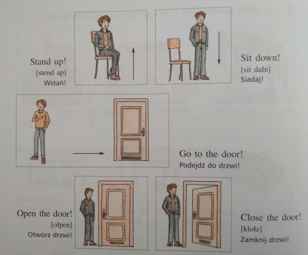
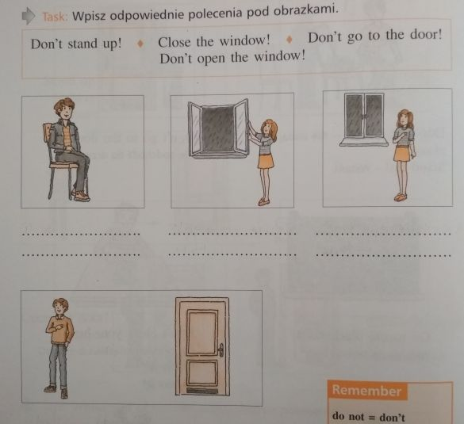

Klasa 5A
wychowawca Agnieszka BieleckaHISTORIA
TEMAT: Odbudowa Królestwa Polskiego
Obejrzyj film: https://www.youtube.com/watch?v=aguoHCpXQE8
NOTATKA
W 1300 roku polską koronę przyjął władca Czech, Wacław II. W czasie jego panowania księciem Kujaw, Władysław Łokietek. Podjął on próby opanowania ziemi krakowskiej. Po śmierci Wacława II Władysław Łokietek ponownie włączył się do walki o tron polski. Wspomagany przez możnych węgierskich opanował ziemię sandomierską. W 1306 roku panował już nad Małopolską, ziemią sieradzko-łęczycką, Kujawami, Pomorzem Gdańskim, a w 1313 r. dołączył jeszcze Wielkopolskę.
W 1320 r. Łokietek koronował się w Krakowie. Odtąd katedra na Wawelu stała się miejscem koronacji polskich monarchów, a Kraków stał się stolicą Polski. Od czasów Władysława Łokietka mieczem koronacyjnym królów Polski był Szczerbiec.
Koronacja Łokietka położyła kres rozbiciu dzielnicowemu Polski i odnowiła Królestwo Polskie. Odtąd na określenie państwa polskiego używano nazwy Korona Królestwa Polskiego.
Władysław Łokietek zabiegał o odzyskanie pozostałych ziem i w tym celu zawarł przymierze z Węgrami i Litwą. Kiedy krzyżackie wojska zniszczyły część Wielkopolski i z bogatymi łupami wracały w stronę Pomorza, Łokietek wydał im bitwę pod Płowcami w 1331 r. Nie zapobiegła ona jednak zajęciu w rok później Kujaw i ziemi dobrzyńskiej przez Zakon.
Za czasów Łokietka od Polski został odłączony Śląsk, którego książęta złożyli hołd lenny Janowi Luksemburskiemu.
MATEMATYKA
Temat: Dodawanie i odejmowanie ułamków dziesiętnych – ćwiczenia.
Zapoznaj się z treścią filmików:
https://www.youtube.com/watch?v=wBAYgnwniXI
https://www.youtube.com/watch?v=YKVuhLJl-9g
Z e-podręcznika str. 150 zad. 2 i 3
https://flipbook.apps.gwo.pl/display/2152
POLSKI
Zapisz w zeszycie:
Temat : Wspomnienie Wielkiego Polaka.
Skopiuj link: https://www.youtube.com/watch?v=GhLVufOoI4o
Obejrzyj uważnie, przemyśl i napisz w zeszycie odpowiedzi :
- O życiu jakiego Polaka jest film?
- Przestrzegania jakich wartości uczył papież?
- Co dla Ciebie znaczy ,,być człowiekiem”?
Czekam na Wasze prace))
USPRAWNIANIE POLSKI
(Wiktoria R., Alan G., Krystian W., Nikola T.)
- Napisz jak się dziś czujesz ?
- Z podanych wyrazów ułóż poprawne zdania i zapisz je do zeszytu:
(pamiętaj o wielkiej literze i znakach interpunkcji)
od, razu ,po, prasowaniu, wyłącz, żelazko
........................................
........................................
bawić, się, nie, dzieciom, zapałkami, pozwól
........................................
........................................
zostawaj, nie, na, ogniu, potraw, gotujących, się
........................................
........................................
dorosłych, osób, tylko, rozpalaj ,ognisko, w, obecności
........................................
........................................
USPRAWNIANIE MATEMATYKA
(Wiktoria, Patrycja, Alan)
ćwiczymy zapisywanie ułamków dziesiętnych
zobacz film : https://www.youtube.com/watch?v=YcKMNcLsLFE
przepisz przykłady z filmu do zeszytu.
Zapisz w ułamku zwykłym ( z kreską ułamkową)
- 2 zł 5 gr
- 4 zł 34 gr
- 5, 07 zł
- 1, 47 zł
Dodaj do siebie, a następnie wynik zapisz w ułamku dziesiętnym
- 2 zł 5 gr i 4 zł 34 gr
- 4 zł 34 gr i 5 zł 7 gr
- 5, 07 zł i 1, 47 zł
- 5, 07 zł i 2 zł 5 gr
kl.5a usprawnianie z matematyki- 29.05. lekcja 4
(Krystian, Michał G, Mateusz P)
Poćwicz myślenie i wyobraźnię. Zrób listę zakupów do sklepu spożywczego tak aby za 50 zł kupić minimum pięć produktów i tak aby zostało jak najmniej reszty. Zrób trzy takie listy każdą z innymi produktami.
Posłuż się gazetkami papierowymi lub online np. https://dino.gazetki-promocyjne.net.pl/
USPRAWNIANIE MUZYKA
( zajęcia z 26 maja)
e-mail: muzykamg@wp.pl
Życzenia muzyczne dla Matki.
W Polsce Dzień Matki przypada na 26 maja. W tym dniu matki są zwykle obdarowywane laurkami, kwiatami oraz różnego rodzaju prezentami przez własne dzieci. Święto to ma na celu okazanie matkom szacunku, miłości i podziękowania za trud włożony w wychowanie.
Pamiętajmy o naszych Mamach !
Posłuchaj piosenki w wykonaniu Arki Noego ,,Ta piosenka jest dla Mamy"
https://www.youtube.com/watch?v=pamULWD7hzY
następnie spróbuj samodzielnie ją zaśpiewać
(kliknij w link)
https://www.youtube.com/watch?v=xPVn85zKA1M
USPRAWNIANIE MUZYKA (29.05)
e-mail: muzykamg@wp.pl
Tańce narodowe -Krakowiak
Krakowiak – żywy i popularny, polski taniec ludowy z okolic Krakowa, zaliczany do polskich tańców narodowych, w metrum 2/4 i w charakterystycznym, synkopowanym rytmie (zjawisko rytmiczne polegajace na przedłużeniu wartości rytmicznej znajdującej się na słabej części taktu o następną część taktu) . Nazwa tańca pochodzi z XVII wieku i odnosiła się do grupy tańców posiadających własne, lokalne nazwy: mijany, dreptany, ścigany, przebiegany i in.
(Oglądnij videoklip i zwróć uwagę na rytm tańca)
Taniec narodowy krakowiak
https://www.youtube.com/watch?v=lGUkCV6-fts
Zad. Czy poznany na muzyce utwór „Dalej chłopcy, dalej żywo" jest utrzymany w rytmie zaprezentowanego polskiego tańca narodowego?
ANGIELSKI
Przepisz temat do zeszytu.
Topic: I can’t dance – Ja nie potrafię tańczyć
Zadanie 1 Przepisz kilka nowych czasowników do zeszytu.
speak English [spiik inglisz] – mówić po angielsku
play volleyball – grać w siatkówkę
play basketball - grać w koszykówkę
drive a car [drajw a kar] – prowadzić samochód
cook [kuk] – gotować
write [rajt] - pisać
read [riid] - czytać
W przeczeniu używamy ‘cannot’ = can’t - nie potrafi
Zadanie 2 Przetłumacz zdania na jezyk polski według przykładu.
Przykład:
I can’t swim. – Ja nie potrafie pływać.
1 She can’t cook. ............................................
2 They can’t speak English. .............................
3 We can’t count. ............................................
4 I can’t drive a car. ……………………………………
Zadanie 3 Posłuchaj nagrania, wybierz jedno zwierzątko i napisz dwa zdania o tym, co ono potrafi robić, a czego nie.
https://www.youtube.com/watch?v=oCAZMW4jMX8
INFORMATYKA
Temat: Tabele, ramki i ozdobniki w tekście – powtórzenie.
- Wejdź na stronę e podręcznika
https://ebook.migra.pl/dlaucznia.php?book=65
- Zapoznaj się z punktem Warto zapamiętać ze str. 123
- Odpowiedz na pytania:
- Do czego służy WordArt?
- W jaki sposób można zmodyfikować kształty wstawione do tekstu?
III. Tekst umieszczony w tabeli i całą tabelę można ………………….
Odpowiedź napisz na komputerze lub w zeszycie i wyślij na mojego e-maila lub na mój nr telefonu.
Powodzenia!
MATEMATYKA
Temat: Dodawanie i odejmowanie ułamków dziesiętnych
Obejrzyj filmik:
https://www.youtube.com/watch?v=Cp6FviEoIPk&t=75s
Z e-podręcznika rozwiąż ćwiczenie B i C strona 149
https://flipbook.apps.gwo.pl/display/2152
POLSKI
Zapisz w zeszycie:
Temat: W rodzinie jest interesująco.
Przeczytaj ( nie przepisuj!! ) fragment utworu ks. Jana Twardowskiego pt. :
,,Co wiesz o swojej rodzinie?”
Jurek miał napisać wypracowanie domowe na temat: „Co wiesz o swojej rodzinie?” Zmartwił się, bo niewiele wiedział. […] Wiedział, jak wygląda mamusia, tatuś i dwie młodsze siostry, ale całej rodziny nie znał. Wiedział, że mamusia ma na imię Barbara, a tatuś – Karol. Wiedział, że mamusia jest zawsze ładna, nawet wtedy, kiedy jest zmęczona. Wiedział, że jedna jego siostra lubi śpiewać, a druga rysować jamniki, ale to za mało, żeby napisać, co się wie o swojej rodzinie. Zadzwonił do swojej babci Zenobii, która wiedziała wszystko; słuchał i zapisywał.
Odpowiedz pisemnie na pytanie: Jak myślisz, dlaczego babcia Jurka wiedziała wszystko?
MUZYKA
e-mail:muzykamg@wp.pl
Temat: Nasze dzieje,nasza tradycja.Tadeusz Kościuszko.
1.Tadeusz Kościuszko (1764-1817) – polski bohater narodowy.
,,Obywatel, który chce być dobrym Polakiem powinien poświęcić wszystko dla ojczyzny i być zawsze ludzkim i sprawiedliwym".
Oglądnij sfilmowaną prezentację pt.,,Tadeusz Kościuszko -polski bohater narodowy".
(kliknij w link)
2.Pobudka Krakusów – „Dalej chłopcy, dalej żywo” (muz.K.Hofman, autor słów nieznany) – pieśń z czasów powstania kościuszkowskiego, namawiająca by zasilać oddziały Krakusów.
(kliknij w link i posłuchaj ,,Dalej chłopcy, dalej żywo")
https://www.youtube.com/watch?v=eitjGahrnRM
Zadanie: Melodia piosenki jest utrzymana w rytmie polskiego tańca narodowego.Przypomnij jego nazwę.
TECHNIKA / GRUPA STOLARNIA
Lekcja
Temat: Tworzywa sztuczne. Jak zrobić doniczkę z butelki? - Doniczkowe koty
Proponuję wykonanie sympatycznej doniczki z plastikowej butelki.
Proszę obejrzeć film
https://www.youtube.com/watch?v=n3BjX54X7fs
Spróbuj wykonać doniczkę - kotka tak jak to zostało przedstawione na filmie.
Nie spiesz się. Staraj się pracować bardzo dokładnie.
Pamiętaj o zachowaniu bezpieczeństwa podczas posługiwania się nożyczkami.
W razie problemów z przecięciem butelki poproś o pomoc osobę dorosłą.
Życzę miłej pracy.
TECHNIKA (grupa p. Ewy Krzemianowskiej)
Przepisz do zeszytu temat lekcji i podpunkty.
Temat: Świat tworzyw sztucznych
- Otrzymywanie tworzyw sztucznych
Podstawowe surowce z których uzyskuje się tworzywa sztuczne to ropa naftowa, węgiel kamienny i kauczuk
- Rodzaje tworzyw sztucznych
– elastomery -odkształcają się pod wpływem ciepła
- plastomery- nie odkształcają się
- Właściwości i zastosowanie tworzyw sztucznych
- są odporne na działanie czynników atmosferycznych
-są dobrymi izolatorami
- są twarde i mają wytrzymałość mechaniczną
Tworzywa sztuczne wykorzystuje się między innymi do wyrobu opakowań, w medycynie, sporcie, przemyśle
- Narzędzia do obróbki tworzyw sztucznych
Zadanie – Przeczytaj rozdział 5 w e podręczniku Technika 5 Jak to działa od strony 36 do 39.
- przepisz z podręcznika – strona 39 narzędzia jakie stosujemy do obróbki tworzyw sztucznych
- korzystając z różnych, dostępnych źródeł napisz jaki jest wpływ tworzyw sztucznych na środowisko naturalne.
ANGIELSKI
Przepisz temat do zeszytu.
Topic: I can do it – Ja potrafię to zrobić
Na dzisiejszej lekcji bedziemy powtarzać czasownik ‘can’ i układać z nim zdania.
W zeszycie możecie znaleźć tabelę z czasownikiem ‘can’, ale jeśli ktoś jej nie ma, proszę przepisać ją do zeszytu.
CAN- POTRAFIĆ, UMIEĆ
liczba pojedyncza:
I can – ja potrafię
You can – ty potrafisz
He can – on potrafi
She can – ona potrafi
It can – ono potrafi
Liczba mnoga:
We can – my potrafimy
You can- wy potraficie
They can – oni/one potrafią
Zadanie 1 Przetłumacz zdania na język polski według przykładu. Skorzystaj z wyrazów z listy z poprzednich lekcji.
Przykład:
She can draw. - On potrafi rysować.
1 I can swim. ...................................................
2 We can play football. ……………………………….
3 She can play the piano. ……………………………
4 You can ride a bike. ………………………………….
5 We can dance. …………………………………………
Zadanie 2 Teraz kliknij na link poniżej, posłuchaj nagrania i napisz dwa zdania podobnie jak w przykładzie.
Słowniczek :
hop – skakać, podskakiwać
like [lajk]– tak jak, jak
https://www.youtube.com/watch?v=QFCkONe4J_8
Przykład:
I can hop like a rabbit. – Ja potrafię skakać jak królik.
I can run like ................................................................
HISTORIA
TEMAT: Społeczeństwo i gospodarka Polski dzielnicowej
Obejrzyj film: https://www.youtube.com/watch?v=xWf2I7wydI8
NOTATKA
Podobnie jak na zachodzie Europy, na ziemiach polskich w XII i XIII stuleciu ukształtowały się w społeczeństwie stany: duchowieństwo, rycerstwo, mieszczaństwo i chłopstwo
W XII stuleciu w Europie miał miejsce postęp w dziedzinie gospodarki. Dało się to zwłaszcza zauważyć w rolnictwie. Dzięki stosowaniu nowych metod uprawy, nowych narzędzi i nawożeniu wzrosła wydajność. Na ziemiach polskich rozpoczął się szeroki proces osadniczy związany z zakładaniem wsi i lokowaniem miast na nowych zasadach.
Trójpolówka - sposób uprawy roli polegający na podzieleniu pola na trzy części. Każdego roku uprawiane są tylko dwie z nich, a trzecia ugoruje , co pozwala na "odpoczywanie" ziemi. Jedno pole obsiewano jesienią zbożem ozimym , drugie obsiewano wiosną zbożem jarym , a trzecie pole ugorowane stanowiło pastwisko .
Na przełomie XII i XIII w. pojawili się na ziemiach polskich osadnicy z Niemiec, którzy przynieśli ze sobą nowe prawo czynszowe nazywane w Polsce „prawem niemieckim” lub „magdeburskim”. Na nim były zakładane nowe wsie.
POLSKI
Zapisz w zeszycie:
Temat: Rodzinne więzi.
Przeczytaj ( nie przepisuj!!):
Przyjrzyj się temu, co najbliższe, czyli swojej rodzinie. Niektóre są małe, inne liczą wiele osób. A jaka jest Twoja rodzina?
Zapisz do zeszytu:
Genealogia- inaczej : rodowód- to....... rodu (ustna lub pisana), w której ukazuje się kolejne … i więzy …. między członkami rodziny. ….tworzy wiele pokoleń wywodzących się od jednego.
Wyrazy pomocne : historia, Ród, przodka, pokolenia , pokrewieństwa
Skopiuj link:
https://www.youtube.com/watch?v=woDdgTZopVw&t=32s
I zobacz jak wyglądało drzewo genealogiczne Piastów.
Na kolejnej lekcji ciąg dalszy))
BIOLOGIA
Temat: Rośliny okrytonasienne .
Prezentacja - Rośliny okrytonasienne
https://www.youtube.com/watch?v=ccH0Sa-RlX0
Notatka :
Do najważniejszych cech roślin okrytonasiennych należy wytwarzanie obupłciowych kwiatów oraz owoców .
Kwiat obupłciowy składa się z okwiatu oraz słupka i pręcików osadzonych na dnie kwiatu.
Zad. 1 Przerysuj schemat budowy kwiatu , jest umieszczony w prezentacji. Zaznacz PRĘCIK , SŁUPEK, DZIAŁKI KIELICHA , DNO KWIATOWE, PŁATEK KORONY.
zad. 2 Odpowiedz na pytanie.
Za pomocą czego najczęściej odbywa się zapylenie u roślin okrytonasiennych ?
MATEMATYKA
Temat: Odejmowanie ułamków dziesiętnych
Zapoznaj się z treścią filmu, który wprowadzi Cię w tematykę lekcji
https://www.youtube.com/watch?v=eiTqDtJAYOQ
Z e-podręcznika rozwiąż ćwiczenie B i C strona 149
https://flipbook.apps.gwo.pl/display/2152
USPRAWNIANIE POLSKI
(Mateusz P., Kuba M.)
- Napisz jak się czujesz? Dlaczego tak możesz się czuć?
- Napisz dziesięć przedmiotów, które mógłbyś umieścić w ,,kapsule czasu” i zakopać na sto lat. Powinny to być przedmioty, które są charakterystyczne dla obecnych czasów/ulubione/ najbardziej wartościowe, itp. dla Ciebie . Powodzenia ))
USPRAWNIANIE MATEMATYKA
(Paulina, Michał G, Krystian M)
ćwiczymy zapisywanie ułamków dziesiętnych
zobacz film : https://www.youtube.com/watch?v=YcKMNcLsLFE
przepisz przykłady z filmu do zeszytu.
Zapisz w ułamku zwykłym ( z kreską ułamkową)
- 2 zł 5 gr
- 4 zł 34 gr
- 5, 07 zł
- 1, 47 zł
Dodaj do siebie, a następnie wynik zapisz w ułamku dziesiętnym
- 2 zł 5 gr i 4 zł 34 gr
- 4 zł 34 gr i 5 zł 7 gr
- 5, 07 zł i 1, 47 zł
- 5, 07 zł i 2 zł 5 gr
ZAJĘCIA TERAPEUTYCZNO -USPRAWNIAJĄCE- MUZYCZNE
e-mail:muzykamg@wp.pl
DZIEŃ MATKI -Pamiętajmy o naszych Mamach!
Obecnie w Polsce święto to przypada na 26 maja. W tym dniu matki są zwykle obdarowywane laurkami, kwiatami oraz różnego rodzaju prezentami przez własne dzieci. Święto to ma na celu okazanie matkom szacunku, miłości i podziękowania za trud włożony w wychowanie.
Polski ,,poeta piosenki"-Wojciech Młynarski i Jego znany utwór NIE MA JAK U MAMY
(kliknij w link i posłuchaj piosenki)
https://www.youtube.com/watch?v=oasNg-d-luA
następnie spróbuj zaśpiewać
(kliknij w link)
https://www.youtube.com/watch?v=_0Y54CrQ4CI
USPRAWNIANIE RUCHOWE
(Alan G., Krystian M.)
Proszę o pomoc w ćwiczeniach rodziców lub rodzeństwo.
Bardzo proszę wykonanie podanych ćwiczeń. Jeżeli któreś z zaproponowanych ćw. sprawi trudność w wykonaniu można je ułatwić zgodnie z możliwościami dziecka.
https://www.youtube.com/watch?v=LYtNu2u___Y
GODZ. WYCHOWAWCZA
Temat: Zdrowy styl życia- aktywność fizyczna.
Skopiuj link :
https://www.youtube.com/watch?v=jgJOS26G1wY&list=PLRReVYm0l4S5vk8L2NjvLVhCg_wN7RHVP
Zastanów się i odpowiedz ustnie : Co wg Ciebie znaczy ,,zdrowy styl życia” (jaki to styl) ? Co nam daje aktywność fizyczna? Czy jesteś aktywny fizycznie?
POLSKI
Zapisz w zeszycie:
Temat: Kto jest ważniejszy …?
Przeczytaj ( nie przepisuj!!) wiersz:
Wiersz o Mamie i Tacie
Mama, Tato to najpiękniejsze słowa,
Powtarzam je sobie wciąż od nowa,
Tata przychodzi pełen radości,
Bo w naszym domu jest dużo miłości.
Miło z rodzicami spędzam czas,
Wszystko na dworze bardzo cieszy nas.
Ciągle słyszymy wiatru szum,
Ktoś odbija piłkę: bum, bum, bum.
Mama pracuje cały
mi dniami,
A my z Tatą jeździmy rowerami.
Często pomagam Mamie w sprzątaniu
Dzisiaj pomogłem w talerzy zmywaniu.
Tak upływają szczęśliwe dni,
Niczego więcej nie trzeba mi.
Miłość rodziców najważniejsza jest,
Nadaje memu życiu sens.
(autor: uczniowie pewnej szkoły)
Odpowiedz pisemnie do zeszytu na pytania:
- Dlaczego tak ważni w życiu są rodzice?
- Jakie cechy autor wiersza przypisuje mamie, a jakie cechy posiada tata?
- W jaki sposób Ty pomagasz swojej mamie, swojemu tatowi?
ANGIELSKI
Przepisz temat do zeszytu.
Topic: Do it! Don’t do that (II)
Zrób to! Nie rób tego!
Na dzisiejszej lekcji nauczymy się wydawać różne rozkazy.
TRYB ROZKAZUJĄCY
1) W zdaniach twierdzących używamy podstawową formę czasownika:
Go! – Idź!
Swim! – Pływaj!
Count! [kaunt] – Licz!
2) W zdaniach przeczących używamy Don’t.
Don’t swim! – Nie pływaj!
Don’t write! – Nie pisz!
Don’t read! – Nie czytaj!
Zadanie 1 Popatrz na rysunki i przeczytaj zdania (w załączniku).

Zadanie 2 Przeczytaj polecenia, przetłumacz je i wpisz pod odpowiednimi obrazkami. Skorzystaj z listy czasowników z poprzedniej lekcji. (w załączniku)
RELIGIA
Temat: Poznajemy Ducha Świętego.
- Pomódl się słowami pieśni „ Duchu Święty”.
https://www.youtube.com/watch?v=f69iDFKmnI0
- Zobacz program „Ziarno” poświęcony Trzeciej Osobie Trójcy Świętej -Duchowi Świętemu.
https://vod.tvp.pl/video/ziarno,przyjdz-duchu-sw,19915150
- Zapamiętaj, jak nazywa się dzień zesłania Ducha Świętego. Napisz w jakim sakramencie otrzymujemy dary Ducha Świętego.
Pozdrawiam wszystkich uczniów
W-F CHŁOPCY
Temat : Doskonalenie sprawności fizycznej
Uwagi wstępne :
- ćwicz tylko,jak jesteś zdrowy,jeśli źle się czujesz,coś Cie boli,nie ćwicz
- staraj się ćwiczyć w stroju sportowym,przestrzegając zasad bezpieczeństwa
- przed ćwiczeniami przewietrz pokój (ćwicz przy otwartym/uchylonym oknie)
- ćwiczenia główne poprzedź rozgrzewką ,wykonywaną na lekcjach wf w szkole
- pamiętaj o rozluźnianiu mięśni pomiędzy poszczególnymi ćwiczeniami
Propozycja ćwiczeń na dzisiejszych zajęciach :
- Bieg w miejscu (3-4 min.),trzymaj równe tempo
- Stojąc w rozkroku,ramiona w bok, skłon tułowia, wykonaj skrętoskłony raz
do prawej,raz do lewej nogi - po 5
- Stojąc w lekkim rozkroku,wykonaj 2 x 10 przysiadów
- Wykonaj 10 podskoków
- obunóż
- na prawej nodze
- na lewej nodze
- Leżąc przodem podpieramy się na wyprostowanych ramionach,jedną nogę
uginamy i wykonujemy przeskok ( raz prawa,raz lewa ) - 20 powtórzeń
- Wykonaj 2 x 10 pompek ( mogą być na kolanach).
- Siad prosty,nogi rozwarte,wykonaj 10 skłonów ( raz do jednej,raz do drugiej
nogi )
- W leżeniu na plecach,(nogi podkurczone,ramiona wzdłuż tułowia) wykonaj
2 x 15 brzuszków
- Ćwiczenie uspokajające - leżąc na plecach ,ciało rozluźnione,zamykamy
oczy ( liczymy do 50 )
Każdą serię powtórz 2x , przerwa pomiędzy seriami ok. 10 min.
Wykonując ćwiczenia w domu wspomagaj się nagraniami video dostępnymi
w serwisie internetowym You Tube .Wybierz propozycje ćwiczeń dla początkujących , które są dostosowane do Twoich możliwości,opierających się
na ćwiczeniach jakie znasz ze szkolnych lekcji wf.
Dziękuję
W-F DZIEWCZYNY
zostańwdomu#trenuj w domu !!!
Potrzebne przybory :piłeczka lub zwinięte skarpetki
Przypominam o zasadach bhp podczas ćwiczeń w domu,tak jak na lekcjach wf w szkole. Proszę również pamiętać, że ćwiczymy tylko i wyłącznie jak jesteśmy zdrowi.
Pamiętajmy przed rozpoczęciem ćwiczeń ,aby zrobić 10 minutową rozgrzewkę (ćwiczenia pamiętamy z lekcji)
Dzisiaj nauczymy się techniki rzutu piłeczką.Proszę obejrzyjcie dokładnie filmik,a następnie w miarę możliwości powtórzcie. Ćwiczenia najlepiej wykonajmy na świeżym powietrzu.Dzisiaj liczy się technika rzutu,a nie kto najdalszy rzut.
https://youtu.be/UwDQ2gmrYoQ?list=TLPQMjEwNTIwMjDnc2YUc8aS9g
USPRAWNIANIE POLSKI
- Napisz jak się czujesz? Dlaczego tak możesz się czuć?
- Napisz dziesięć przedmiotów, które mógłbyś umieścić w ,,kapsule czasu” i zakopać na sto lat. Powinny to być przedmioty, które są charakterystyczne dla obecnych czasów/ulubione/ najbardziej wartościowe, itp. dla Ciebie . Powodzenia ))
USPRAWNIANIE MATEMATYKA
(Krystian W, Nikola T) (Mateusz P, Jakub M)
ćwiczymy zapisywanie ułamków dziesiętnych
zobacz film : https://www.youtube.com/watch?v=YcKMNcLsLFE
przepisz przykłady z filmu do zeszytu.
Zapisz w ułamku zwykłym ( z kreską ułamkową)
- 2 zł 5 gr
- 4 zł 34 gr
- 5, 07 zł
- 1, 47 zł
Dodaj do siebie, a następnie wynik zapisz w ułamku dziesiętnym
- 2 zł 5 gr i 4 zł 34 gr
- 4 zł 34 gr i 5 zł 7 gr
- 5, 07 zł i 1, 47 zł
- 5, 07 zł i 2 zł 5 gr
WDŻ
Temat: Dojrzewam. (chłopcy)
Proszę obejrzeć film: https://www.youtube.com/watch?v=YavEH9CdoXM
GEOGRAFIA
Temat: Sprawdzian wiadomości.
Przepisz do zeszytu sprawdzian lub wydrukuj i prześlij mi na adres: boz_lis@interia.pl
Zad. 1
Narysuj las strefy umiarkowanej i podpisz jego warstwy ( gleba i ściółka, podszyt, runo leśne, korony drzew)
Zad. 2
W której warstwie lasu mieszka?
Wiewiórka ………………………
Sarna…………………………
Żmija ………………………..
Mrówki……………..
Kret…………………………….
Zad. 3
Napisz, czego nie wolno robić w lesie
Nie wolno………………………………………………
Nie wolno………………………………………………………
Zad. 4
Której strefy klimatycznej dotyczy opis ( sawanna, dżungla, pustynia, step,)
Są tu 2 pory roku sucha i deszczowa…………………………..
Jest tu w dzień bardzo gorąco, w nocy zimno, rzadko padają deszcze……………………..
Jest tu bardzo wilgotno i gorąco; codziennie padają deszcze…………………………………
Zad.5
Podkreśl składniki pogody: temperatura powietrza, północ, zachmurzenie, gwiazdy, wiatr, opady, wysokość terenu, ciśnienie atmosferyczne, grubość, wilgotność powietrza.
RELIGIA
Temat: „Wniebowstąpienie Jezusa”
- Zrób znak krzyża, w prostej modlitwie podziękuj Jezusowi za Jego opiekę nad tobą.
- Zobacz program „Ziarno” opowiadającym o Wniebowstąpieniu Jezusa.
https://vod.tvp.pl/video/ziarno,wniebowstapienie-panskie,1703095
- Zastanów się, kto dzisiaj jest świadkiem Jezusa?
- Pomódl się słowami pieśni.
https://www.youtube.com/watch?v=lCdHW_B6SKM
POLSKI
Zapisz w zeszycie:
Temat : Rozmowa – czyli jak wymienić myśli za pomocą słowa.
Zapisz w zeszycie: dialog to rozmowa dwóch osób.
Pamiętasz, jak nazywamy wypowiedź jednej osoby ? Sprawdź w google co znaczy : monolog.
Przeczytaj i przepisz do zeszytu dialog. Zaznacz na kolorowo w nim wszystkie znaki przestankowe ( napisz co to za znak) :
- Wygrałem zawody pływackie !
- Naprawdę ?! Żartujesz.
-Coś Ty ! Płynąłem jak nigdy w życiu…
- Niesłychane ! Gratuluję !
Pozdrawiam ))
MATEMATYKA
Temat: Dodawanie ułamków dziesiętnych
Zapoznaj się z treścią filmu, który wprowadzi Cię w tematykę lekcji
https://www.youtube.com/watch?v=14vMyird3vo
Z e-podręcznika ze strony 146 i 147 zapisz do zeszytu przykłady (na zielonym tle) i rozwiąż ćwiczenie D strona 147 oraz zadanie 1 i 2
https://flipbook.apps.gwo.pl/display/2152
PLASTYKA
TEMAT : Serce - forma przestrzenna z papieru
/Do wykonania pracy będzie potrzebna : kolorowa kartka papieru, nożyczki ,klej/
W sztuce współczesnej często spotykamy się z formami przestrzennymi.
Nazywamy tak niektóre rzeźby, ale głownie dzieła reprezentujące nowe formy w sztuce,
zwykle wykonane z nietypowych materiałów np. plastiku, metalu ,tkaniny lub różnych połączeń.
Wykonajcie dekoracyjną formę z papieru - serce . To też będzie mała forma przestrzenna
tak jak rzeźba ale z papieru . Obejrzyjcie uważnie film :
https://www.youtube.com/watch?v=qw1JhdDCRvA
wykonajcie prace według instrukcji ale wielkość koła może być różna
/to prosta forma ale pracujcie pomału i uważnie/
Gotową prace możecie podarować mamie na Dzień Matki.
Zróbcie zdjęcie pracy i wyślijcie na adres: beata.chmiel20@wp.pl
W-F DZIEWCZYNY
Temat:Technika startu niskiego
zostańwdomu#trenuj w domu !!!
Przypominam o zasadach bhp podczas ćwiczeń w domu,tak jak na lekcjach wf w szkole. Proszę również pamiętać, że ćwiczymy tylko i wyłącznie jak jesteśmy zdrowi.
Pamiętajmy przed rozpoczęciem ćwiczeń ,aby zrobić 10 minutową rozgrzewkę (ćwiczenia pamiętamy z lekcji)
Dzisiaj trochę pobiegamy.Proszę obejrzyjcie dokładnie filmik,a następnie w miarę możliwości powtórzcie. Ćwiczenia najlepiej wykonajmy na świeżym powietrzu
https://youtu.be/5ZaQKjEH5rs?list=TLPQMjEwNTIwMjDnc2YUc8aS9g
W-F CHŁOPCY
Temat : Ćwiczenia wzmacniające nóg
Uwagi wstępne :
- ćwicz tylko wtedy , kiedy jesteś zdrowy
- staraj się ćwiczyć w stroju sportowym
- ćwicz przy otwartym/uchylonym oknie
- przed ćwiczeniami głównymi wykonaj 10 min. rozgrzewkę
- przestrzegaj zasad bezpieczeństwa
- pamiętaj o rozluźnianiu mięśni po każdym ćwiczeniu
Propozycja ćwiczeń :
- Bieg w miejscu,wysoko unosząc kolana - licz do 20
- klaskając pod kolanami ( raz pod prawym,raz pod lewym)
- uderzając piętami o pośladki
- Stojąc w lekkim rozkroku ,wykonaj przeskok w bok i z powrotem - 10x
- Stając w pozycji wykroczno- zakrocznej ( lewa noga z przodu , prawa
z tył )wykonaj przeskok i z powrotem - liczymy do 12 - Stojąc w lekkim rozkroku wykonaj 2 x 10 przysiadów na całych stopach
- Wykonaj 2 x 10 pajacyków
- Przejdź do pozycji leżącej na plecach ,unieś tułów,podpór ramionami
i wykonaj tzw. rowerek 2 x licząc do 20
- W pozycji stojącej,wykonaj podskoki raz na prawej, razy na lewej nodze
po 10 x
- Na zakończenie serii ćwiczenia oddechowe - ramiona w górę ( wdech),
skłon ( wydech ) - powtórz 5 razy
Każdą serię wykonaj 2x,przerwa pomiędzy seriami ok. 10 min.
Dziękuję
USPRAWNIANIE TAŃCE
(WIKTORIA R,PATRYCJA S,KRYSTIAN W,NIKOLA T)
Dzień dobry .
Wysyłam kolejny filmik...skoczny,krótki i bardzo łatwy.Można przy nim się fajnie bawić.Proponuję bez obciążenia tzn. butelek. Nauczcie się pierwszej części układu. Ćwiczymy równocześnie pracę ramion i nóg
USPRAWNIANIE PLASTYKA
/MATEUSZ P. MICHAŁ G. JAKUB M. ALAN G./
ZADANIE: Z plasteliny wykonajcie kształt ŻABY
według instrukcji z filmu:
https://www.youtube.com/watch?v=Qfto958glHI
możecie zrobić kilka żab różnego koloru.
USPRAWNIANIE LOGOPEDIA
(Paulina G., Krystian M. )
Ćwiczenia oddechowe - usiądź wygodnie i zrób 5 wdechów i wydechów przez nos, pamiętaj, że usta są zamknięte; nabierz powietrza przez nos, zatrzymaj je na chwilę, wypuść przez usta, powtórz ćwiczenie 3 razy,
Ćwiczenia słuchu - usiądź, zamknij oczy i nazwij 2 dźwięki dochodzące z otoczenia.
Ćwiczenia usprawniające język (przygotowanie do wywołania głoski /r/) - unieś język do górnych dziąseł, cofnij język wzdłuż podniebienia, przypomnij sobie ćwiczenie nazwane "konik" (kląskanie) - zrób je 5 razy, Powtarzaj sylaby, język ułóż przy górnych zębach: d(r)a d(r)o d(r)e d(r)u d(r)y
18-22.05 11-15.05 04-08.05 27-30.04 20-24.04 15-17.04 06-08.04 30.03-03.04 25-27.03